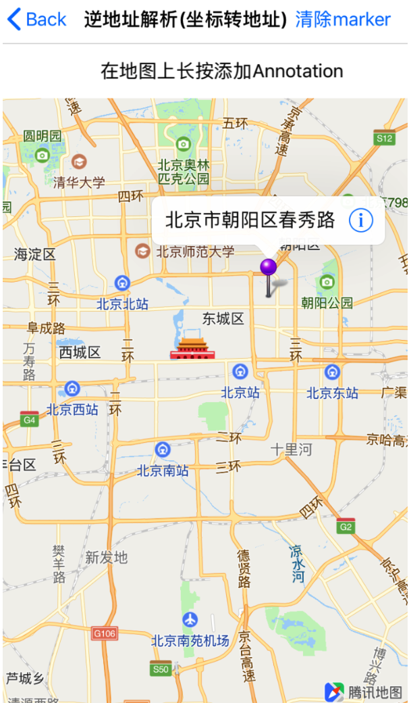
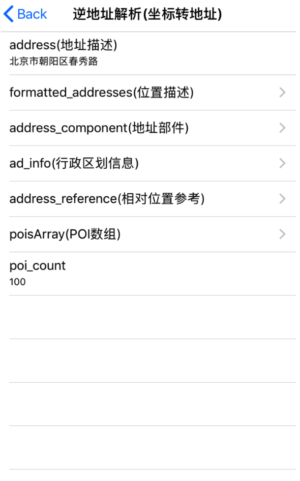

逆地址解析（坐标位置描述）
逆地址解析提供由坐标到坐标所在位置的文字描述的转换。输入坐标返回地理位置信息和附近poi列表。目前应用于物流、出行、O2O、社交等场景。服务响应速度快、稳定，支撑亿级调用。 1）满足传统对省市区、乡镇村、门牌号、道路及交叉口、河流、湖泊、桥、poi列表的需求。 2）业界首创，提供易于人理解的地址描述：海淀区中钢国际广场(欧美汇购物中心北)。 3）提供精准的商圈、知名的大型区域、附近知名的一级地标、代表当前位置的二级地标等。
引入头文件
#import <QMapKit/QMSSearchKit.h>
在AppDelegate.m 中设置已勾选WebServiceAPI的Key:
#import <QMapKit/QMSSearchKit.h>
- (BOOL)application:(UIApplication *)application didFinishLaunchingWithOptions:(NSDictionary *)launchOptions {
self.window = [[UIWindow alloc] initWithFrame:[[UIScreen mainScreen] bounds]];
// Configure API Key.
[QMapServices sharedServices].APIKey = @"您的APIKey";
// 如需检索功能，请设置检索的API Key
[[QMSSearchServices sharedServices] setApiKey:@"您的APIKey"];
}
注：请用户确认API Key已勾选WebServiceAPI选项，具体设置请参考设置
定义QMSSearcherAPI
定义主搜索对象 QMSSearcherAPI，并继承搜索协议 <QMSSearchDelegate>
构造QMSSearcherAPI
构造主搜索对象 QMSSearcherAPI，并设置代理
self.mySearcher = [[QMSSearcher alloc] initWithDelegate:self];
逆地址解析接口参数
设置逆地址解析检索参数 QMSReverseGeoCodeSearchOption，其中 location 为必填字段
QMSReverseGeoCodeSearchOption revGeoOption = [QMSReverseGeoCodeSearchOption alloc] init];
[revGeoOption setLocationWithCenterCoordinate:CLLocationCoordinate2DMake(39.907053,116.395984)];
参数说明：
| 参数 | 说明 |
|---|---|
| NSString *location | 位置坐标，格式：location=lat<纬度>,lng<经度> |
| NSString *poi_options | 用于控制POI列表： 1. poi_options=address_format=short，返回短地址，缺省时返回长地址 2. poi_options=radius=5000，半径，取值范围 1-5000（米） 3. poi_options=page_size=20，每页条数，取值范围 1-20 4. poi_options=page_index=1，页码，取值范围 1-20（注：分页时page_size与page_index参数需要同时使用） 5. poi_options=policy=1/2/3/4/5，控制返回场景： policy=1[默认] 以地标+主要的路+近距离POI为主，着力描述当前位置； policy=2 到家场景：筛选合适收货的POI，并会细化收货地址，精确到楼栋； policy=3 出行场景：过滤掉车辆不易到达的POI(如一些景区内POI)，增加道路出入口、交叉口、大区域出 入口类POI，排序会根据真实API大用户的用户点击自动优化。 policy=4 社交签到场景，针对用户签到的热门地点进行优先排序。 policy=5 位置共享场景，用户经常用于发送位置、位置分享等场景的热门地点优先排序 6. poi_options=category=分类词1，分类词2，指定分类，多关键词英文分号分隔；（支持类别参见：附录） |
| BOOL get_poi | 是否返回周边POI列表，默认不返回 |
poi_options单个参数写法示例：
poi_options=address_format=short
poi_options多个参数英文分号间隔，写法示例：
poi_options=address_format=short;radius=5000;
page_size=20;page_index=1;policy=2
revGeoOption.poi_options = @"address_format=short";
revGeoOption.poi_options = @"address_format=short;radius=5000;page_size=20;page_index=1;policy=2";
发起逆地址解析检索
调用QMSSearcherAPI中的 searchWithReverseGeoCodeSearchOption: 发起逆地址解析检索
[self.mySearcher searchWithReverseGeoCodeSearchOption:revGeoOption];
在回调中处理搜索数据
当检索成功后，会调用到 searchWithReverseGeoCodeSearchOption: didReceiveResult: 回调函数，通过解析 QMSReverseGeoCodeSearchResult 数据把所需的结果绘制到地图上。
- (void)searchWithReverseGeoCodeSearchOption:(QMSReverseGeoCodeSearchOption *)reverseGeoCodeSearchOption didReceiveResult:(QMSReverseGeoCodeSearchResult *)reverseGeoCodeSearchResult
{
self.revResult = reverseGeoCodeSearchResult;
NSLog(@"get result %@",self.revResult);
}
QMSReverseGeoCodeSearchResult属性说明：
| 属性 | 说明 |
|---|---|
| NSString *address | 地址描述 |
| QMSReGeoCodeFormattedAddresses *formatted_addresses | 位置描述 |
| QMSAddressComponent *address_component | 地址部件，address不满足需求时可自行拼接 |
| QMSReGeoCodeAdInfo *ad_info | 行政区划信息 |
| QMSReGeoCodeAddressReference *address_reference | 坐标相对位置参考 |
| NSArray *poisArray | POI数组，对象中每个子项为一个POI(QMSReGeoCodePoi)对象 |
| NSUInteger poi_count | 查询的周边poi的总数 |
从poisArray中可获取地址附近的POI（QMSReGeoCodePoi类）信息，属性说明：
| 属性 | 说明 |
|---|---|
| NSString *id_ | POI唯一标识 |
| NSString *title | poi名称 |
| NSString *address | 地址 |
| NSString *category | POI分类 |
| CLLocationCoordinate2D location | 坐标(经纬度) |
| double _distance | 该POI到逆地址解析传入的坐标的直线距离 |
QMSReverseGeoCodeSearchResult 属性说明表格的其他类详情请参考 QMSSearchResult.h文件。
效果示例图
QMSReverseGeoCodeSearchOption *revGeoOption = [[QMSReverseGeoCodeSearchOption alloc] init];
[revGeoOption setLocationWithCenterCoordinate:coordinate];
[revGeoOption setGet_poi:YES];
revGeoOption.poi_options = @"page_size=5;page_index=1";
[self.mySearcher searchWithReverseGeoCodeSearchOption:revGeoOption];
在地上长按生成标记点：

逆地址解析的信息：

错误信息回调
当检索失败时，回调函数 searchWithSearchOption: didFailWithError: 会返回对应的错误信息
- (void)searchWithSearchOption:(QMSSearchOption *)searchOption didFailWithError:(NSError *)error
{
NSLog(@"%@",error);
}
更详细设置请参考demo